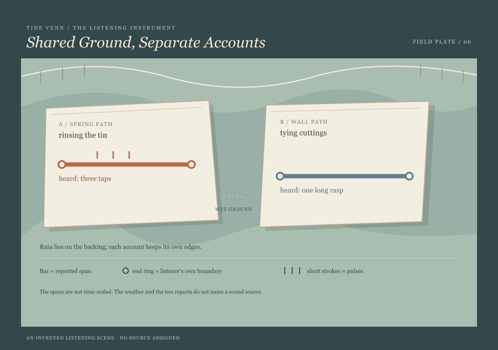

Shared Ground, Separate Accounts
Two listeners keep their own records on one weathered sheet. The rain belongs to the backing; no source is assigned.

Reading the marks
Each bar is one listener's reported audible span. Its end rings mark that listener's own estimated boundaries; the short strokes mark pulses separately from duration. These spans are not scaled to time, so their drawn lengths cannot be compared as durations.
The scene is invented. Weather marks the shared backing only. It does not establish that the two people heard the same sound, or what made either sound.